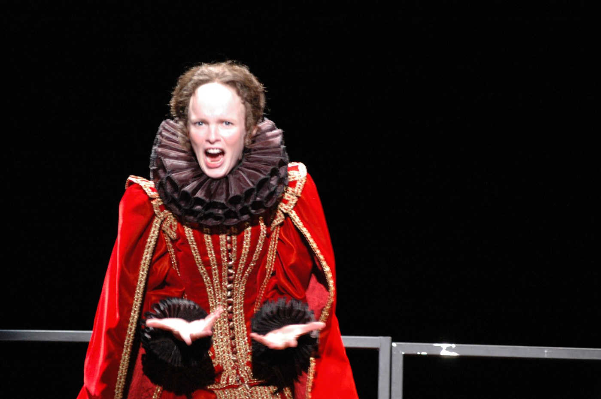
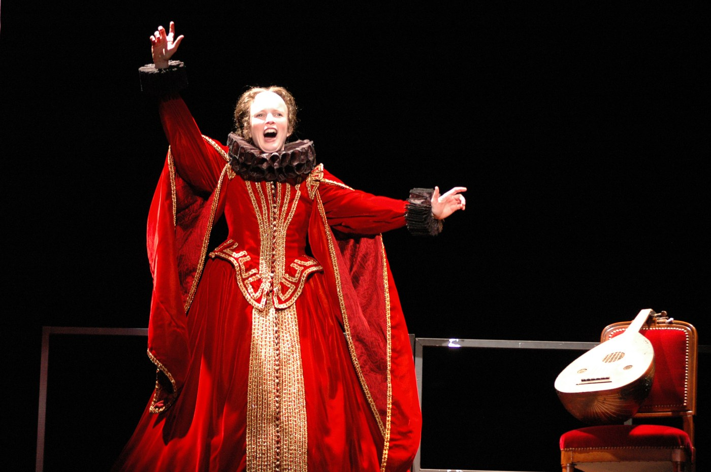
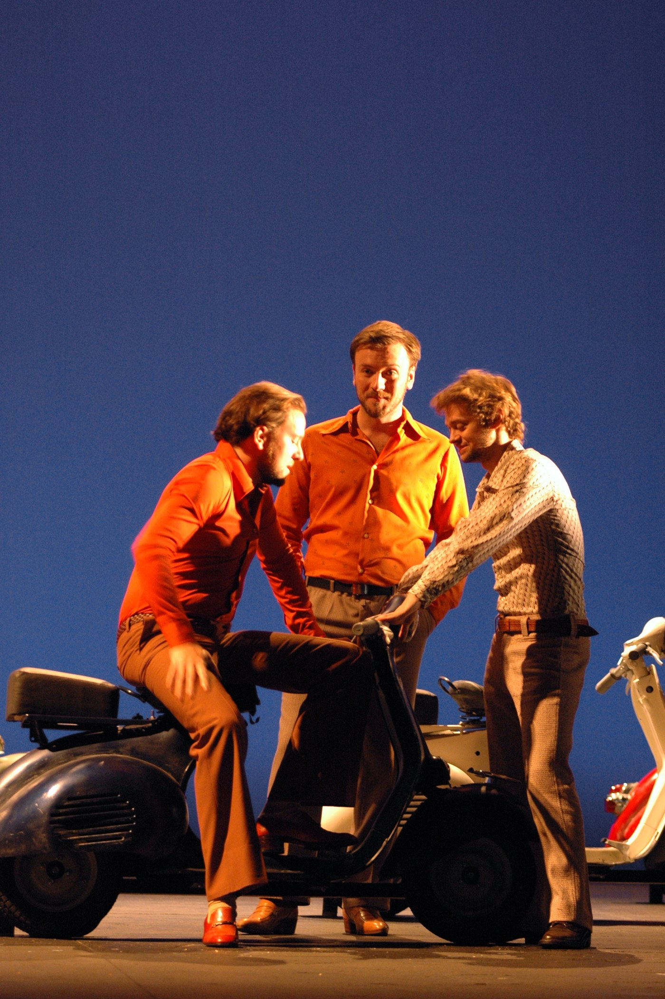
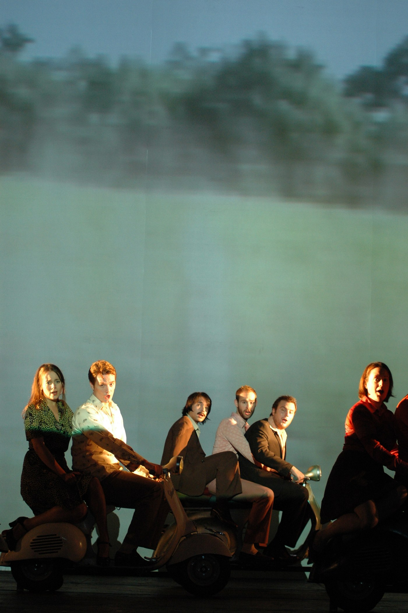
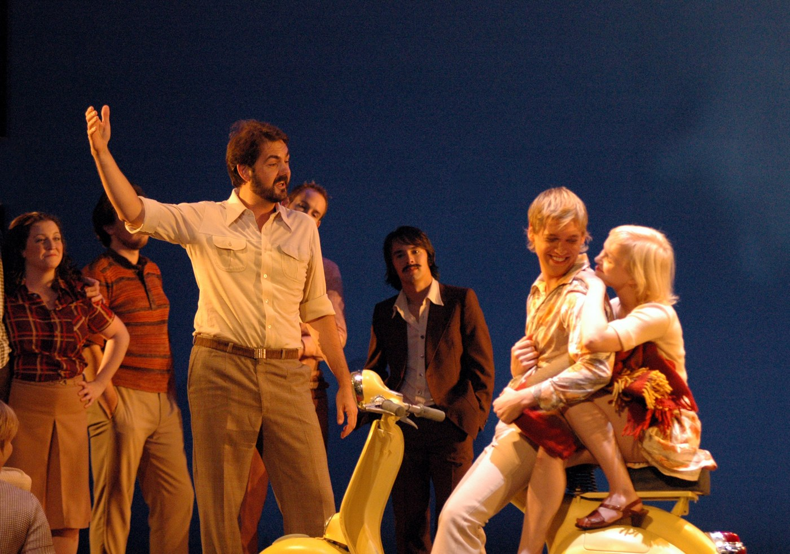
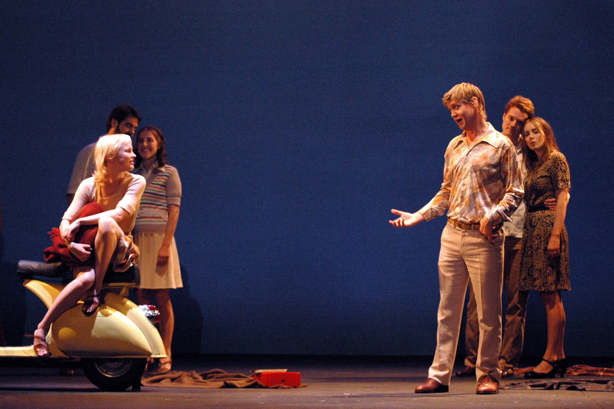
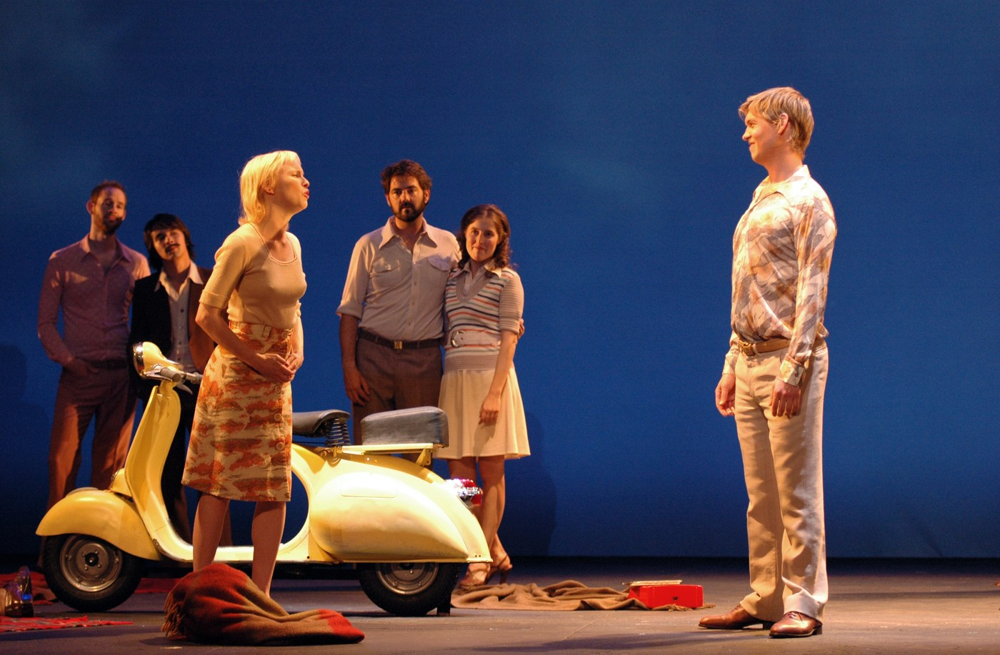
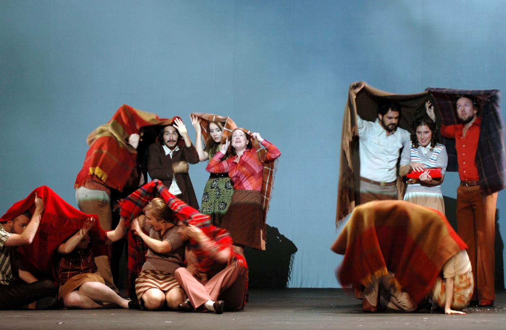
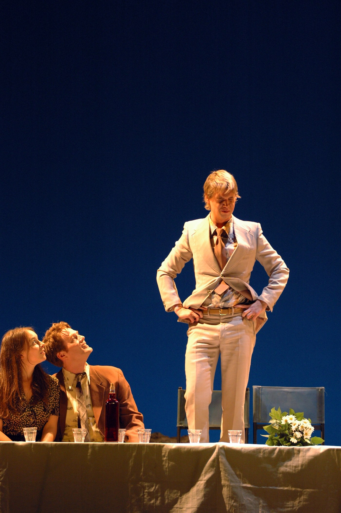

Mantova 1607. La prima opera della storia. Quattrocento anni dopo, Lille la ripòne come un manoscritto: bisogna ascoltare il silenzio fra una nota e l'altra.
Mantua 1607. The first opera in history. Four hundred years later, Lille puts it back like a manuscript: one must listen to the silence between one note and the next.
Mantoue 1607. Le premier opéra de l'histoire. Quatre cents ans plus tard, Lille le repose comme un manuscrit : il faut écouter le silence entre une note et la suivante.
Per l'Opéra de Lille, nel novembre 2005, Cristian Taraborrelli firma in proprio scene e costumi di L'Orfeo, la prima opera della storia compiuta come tale (Mantova, 24 febbraio 1607). Regia di Giorgio Barberio Corsetti. Sul podio Emmanuelle Haïm con il suo ensemble Le Concert d'Astrée: la più importante interprete monteverdiana del primo Duemila, allieva di William Christie e fondatrice di un'estetica barocca francese rigorosa e teatralmente liberatoria. Nel ruolo del titolo il tenore Michael Slattery; Euridice e La Musica Kerstin Avemo; Caronte Paolo Battaglia. Video di Fabio Massimo Iaquone, luci di Stefano Foti.
For the Opéra de Lille, in November 2005, Cristian Taraborrelli singly signs set and costumes of L'Orfeo, the first opera in history realised as such (Mantua, 24 February 1607). Direction by Giorgio Barberio Corsetti. On the podium Emmanuelle Haïm with her ensemble Le Concert d'Astrée: the foremost Monteverdian interpreter of the early 2000s, pupil of William Christie and founder of a rigorous, theatrically liberating French baroque aesthetic. In the title role, tenor Michael Slattery; as Eurydice and La Musica Kerstin Avemo; as Charon Paolo Battaglia. Video by Fabio Massimo Iaquone, lighting by Stefano Foti.
Pour l'Opéra de Lille, en novembre 2005, Cristian Taraborrelli signe seul décors et costumes de L'Orfeo, le premier opéra de l'histoire réalisé comme tel (Mantoue, 24 février 1607). Mise en scène de Giorgio Barberio Corsetti. Au pupitre Emmanuelle Haïm avec son ensemble Le Concert d'Astrée. Dans le rôle-titre, le ténor Michael Slattery ; Eurydice et La Musique Kerstin Avemo ; Caron Paolo Battaglia. Vidéo : Fabio Massimo Iaquone, lumières : Stefano Foti.
L'Opera — La nascita del melodramma
Mantova, 24 febbraio 1607. Nel Palazzo Ducale dei Gonzaga, davanti all'Accademia degli Invaghiti, va in scena per la prima volta nella storia uno spettacolo che canta tutto, dall'inizio alla fine, secondo i principi della Camerata fiorentina. Claudio Monteverdi, maestro di cappella alla corte gonzaghesca, e il librettista Alessandro Striggio raccolgono il mito di Orfeo (già usato nel 1600 da Peri e Caccini) e lo riscrivono in cinque atti con un'orchestra di trentasette strumenti, una toccata di apertura che inaugura il teatro lirico, e un linguaggio melodico-drammatico mai sperimentato prima.
Il mito: Orfeo, cantore tracio, sposa Euridice. Lei muore morsa da una serpe. Orfeo discende agli Inferi, commuove con il canto Caronte, Plutone e Proserpina, e ottiene di riportarla in vita a patto di non guardarla finché non sono usciti. La guarda. La perde. Versione di Striggio originale: Orfeo dilaniato dalle Baccanti. Versione 1609: Apollo lo rapisce in cielo. Cristian e Corsetti scelgono la versione apollinea, quella in cui il canto vince sulla morte e si trasforma in luce ascensionale.
Mantua, 24 February 1607. In the Gonzaga Ducal Palace, before the Accademia degli Invaghiti, for the first time in history a spectacle is staged that sings everything, from beginning to end, according to the principles of the Florentine Camerata. Claudio Monteverdi, chapel master at the Gonzaga court, and librettist Alessandro Striggio take the Orpheus myth (already used in 1600 by Peri and Caccini) and rewrite it in five acts with an orchestra of thirty-seven instruments, an opening toccata that inaugurates lyric theatre, and a melodic-dramatic language never experimented before.
The myth: Orpheus, Thracian singer, marries Eurydice. She dies bitten by a snake. Orpheus descends to the Underworld, moves Charon, Pluto and Proserpina with his song, and is granted to lead her back to life provided he does not look at her until they are out. He looks at her. He loses her. Cristian and Corsetti choose the Apollonian version, in which song defeats death and turns into ascensional light.
Mantoue, 24 février 1607. Dans le Palais Ducal des Gonzague, devant l'Accademia degli Invaghiti, est mis en scène pour la première fois dans l'histoire un spectacle qui chante tout, du début à la fin, selon les principes de la Camerata florentine. Cristian et Corsetti choisissent la version apollinienne, dans laquelle le chant vainc la mort et se transforme en lumière ascensionnelle.
La Visione — La voce e l'immagine
Corsetti rifiuta la filologia rinascimentale (festa di palazzo, costumi gonzagheschi). Cerca un Orfeo non rappresentato ma evocato: un cantore solo davanti a uno spazio bianco che diventa rito, ade, cielo. La scena di Cristian Taraborrelli gioca su tre soglie: la natura pastorale del primo atto (foglie proiettate, luce verde-acqua), la barriera dell'oltretomba (specchio nero, video di acque sotterranee), il cielo apollineo del finale (un cono di luce verticale). Le video-immagini di Iaquone non descrivono il paesaggio: lo evocano per tracce.
I costumi, anch'essi firmati da Cristian, rinunciano alla cifra storica seicentesca e cercano una contemporaneità rituale: tuniche essenziali, tessuti che cambiano colore con la luce, solo le maschere per Caronte e Plutone introducono il segno della soglia infera. La direzione di Emmanuelle Haïm — con strumenti d'epoca dell'ensemble Le Concert d'Astrée — restituisce alla partitura di Monteverdi il nervo barocco francese: ritmi di danza, virtuosismi vocali, silenzi costruiti come architetture.
Corsetti refuses Renaissance philology. He seeks an Orpheus not represented but evoked: a lone singer before a white space that becomes rite, Hades, sky. Cristian Taraborrelli's set plays on three thresholds: the pastoral nature of the first act, the barrier of the underworld, the Apollonian sky of the finale. Iaquone's video imagery does not describe the landscape: it evokes it through traces.
The costumes, also signed by Cristian, renounce seventeenth-century historical signatures and seek a ritual contemporaneity. Emmanuelle Haïm's direction — with period instruments — restores to Monteverdi's score the French baroque nerve: dance rhythms, vocal virtuosity, silences built as architecture.
Corsetti refuse la philologie Renaissance. La scénographie de Cristian Taraborrelli joue sur trois seuils. Les costumes, signés également par Cristian, cherchent une contemporanéité rituelle. La direction d'Emmanuelle Haïm restitue le nerf baroque français.
Apparato critico
«Vissi mia bella, perché ti vedessi.»
Alessandro Striggio — L'Orfeo, Atto IV
«Monteverdi non si esegue, si interroga. Ogni nota è una scelta drammatica.»
«Monteverdi is not performed, he is questioned. Every note is a dramatic choice.»
«Monteverdi ne s'exécute pas, il s'interroge. Chaque note est un choix dramatique.»
Emmanuelle Haïm — intervista, Le Concert d'Astrée
Galleria — Foto di scena di Frédéric Iovino
Foto di scena della produzione dell’Opéra de Lille, novembre 2005, realizzate da Frédéric Iovino. La scenografia di Cristian Taraborrelli costruisce uno spazio dove la Camerata fiorentina di Monteverdi dialoga con un’estetica contemporanea: rose-presenze in primo piano, proiezioni rinascimentali sullo schermo di fondo, costumi che attraversano i quattro secoli che separano Mantova 1607 da Lille 2005.
Stage photos of the November 2005 Opéra de Lille production by Frédéric Iovino. Cristian Taraborrelli’s scenography builds a space where Monteverdi’s Florentine Camerata dialogues with a contemporary aesthetic.
Photos de scène de la production de l’Opéra de Lille (novembre 2005) par Frédéric Iovino.









Foto © Frédéric Iovino · Opéra de Lille, novembre 2005
Tags
Rassegna Stampa
Materiali di rassegna stampa, recensioni e citazioni della critica disponibili su richiesta.
Press review materials, critical reviews and quotations available upon request.
Documents de revue de presse, critiques et citations disponibles sur demande.
Note di produzione
La produzione s'inscrive nell'arco trentennale del lavoro di Cristian Taraborrelli sulla scena come dispositivo cinetico, mai fondale. Materiali di scena, figurini, bozzetti, prototipi e maquette sono parte dell'archivio dello studio.
The production belongs to the thirty-year arc of Cristian Taraborrelli's work on the stage as a kinetic device, never a backdrop. Stage materials, costume sketches, prototypes and maquettes are part of the studio's archive.
La production s'inscrit dans l'arc trentenaire du travail de Cristian Taraborrelli sur la scène comme dispositif cinétique, jamais décor. Matériaux de scène, figurines, prototypes et maquettes font partie des archives de l'atelier.
Team